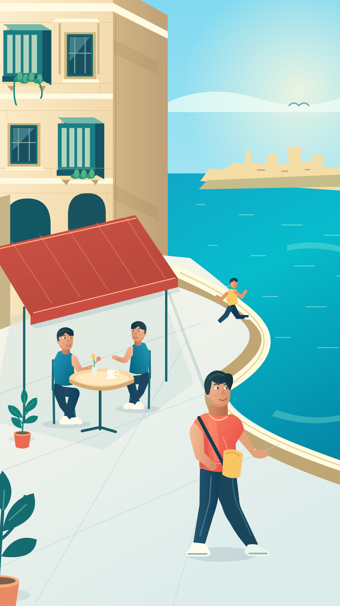
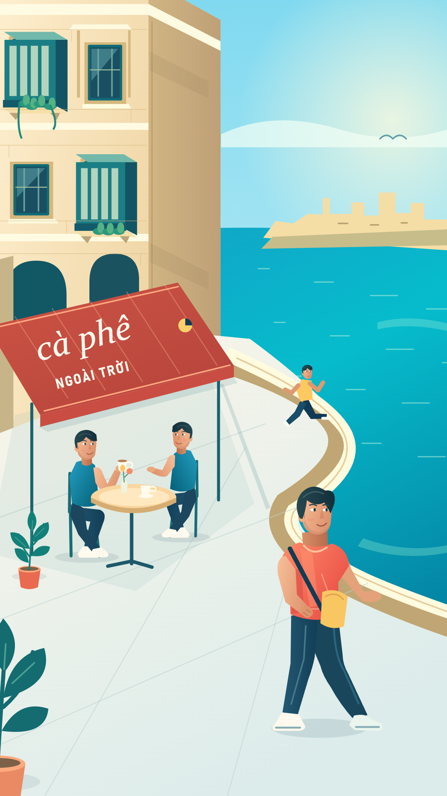
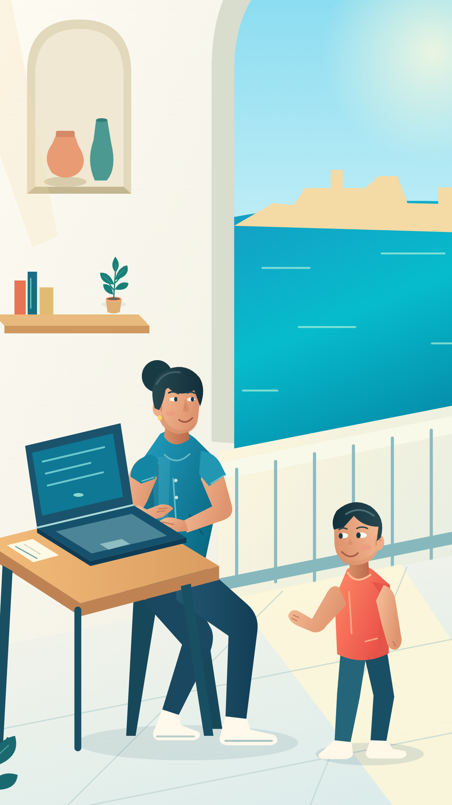
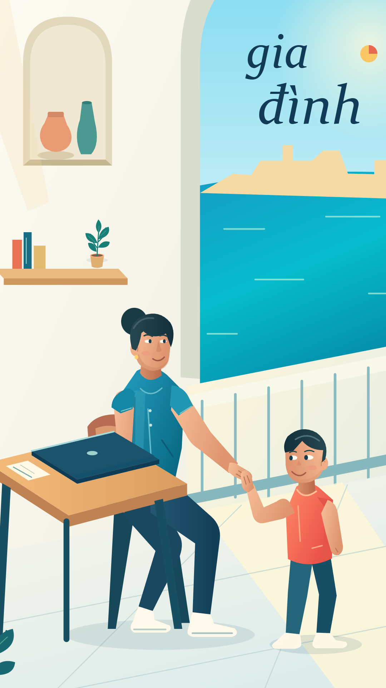

S03-A
Coastal lifestyle · environment & character
Voice 10.50s · global frame 315 · STATIC POSEAWAITING VISUAL STYLE REVIEW — static artwork and type-layout proofs. Modern illustrated storytelling, coherent spatial construction, environment-bound typography. No pilot animation or MP4 produced.

Coastal lifestyle · environment & character
Voice 10.50s · global frame 315 · STATIC POSE
Café · typography on the awning
Voice 13.68s · global frame 411 · STATIC POSE
Workspace · parent & child
Voice 42.14s · global frame 1265 · STATIC POSE
Family · connection & typography
Voice 45.00s · global frame 1350 · STATIC POSE